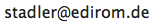

Virtueller Forschungsverbund "Edirom"
Musikwissenschaftliches Seminar Detmold/Paderborn
Gartenstraße 20
D–32756 Detmold
Tel. +49 (0) 5231 / 975-665
Fax: +49 (0) 5231 / 975-668
E-Mail: 
Verantwortlich für den Inhalt dieser Seiten:
Benjamin W. Bohl und Peter Stadler
Unserer Website verwendet Piwik, dabei handelt es sich um einen sogenannten Webanalysedienst. Piwik verwendet sog. “Cookies”, dass sind Textdateien, die auf Ihrem Computer gespeichert werden und die unsererseits eine Analyse der Benutzung der Webseite ermöglichen. Zu diesem Zweck werden die durch den Cookie erzeugten Nutzungsinformationen (einschließlich Ihrer gekürzten IP-Adresse) an unseren Server übertragen und zu Nutzungsanalysezwecken gespeichert, was der Webseitenoptimierung unsererseits dient. Ihre IP-Adresse wird bei diesem Vorgang umgehend anonymisiert, so dass Sie als Nutzer für uns anonym bleiben. Die durch den Cookie erzeugten Informationen über Ihre Benutzung dieser Webseite werden nicht an Dritte weitergegeben. Sie können die Verwendung der Cookies durch eine entsprechende Einstellung Ihrer Browser Software verhindern, es kann jedoch sein, dass Sie in diesem Fall gegebenenfalls nicht sämtliche Funktionen dieser Website voll umfänglich nutzen können.
Wenn Sie mit der Speicherung und Auswertung dieser Daten aus Ihrem Besuch nicht einverstanden sind, dann können Sie der Speicherung und Nutzung nachfolgend per Mausklick jederzeit widersprechen. In diesem Fall wird in Ihrem Browser ein sog. Opt-Out-Cookie abgelegt, was zur Folge hat, dass Piwik keinerlei Sitzungsdaten erhebt. Achtung: Wenn Sie Ihre Cookies löschen, so hat dies zur Folge, dass auch das Opt-Out-Cookie gelöscht wird und ggf. von Ihnen erneut aktiviert werden muss.
Quelle: www.datenschutzbeauftragter-info.de